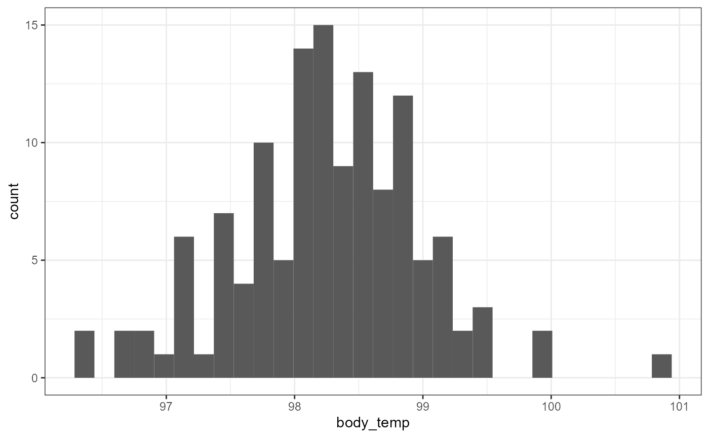
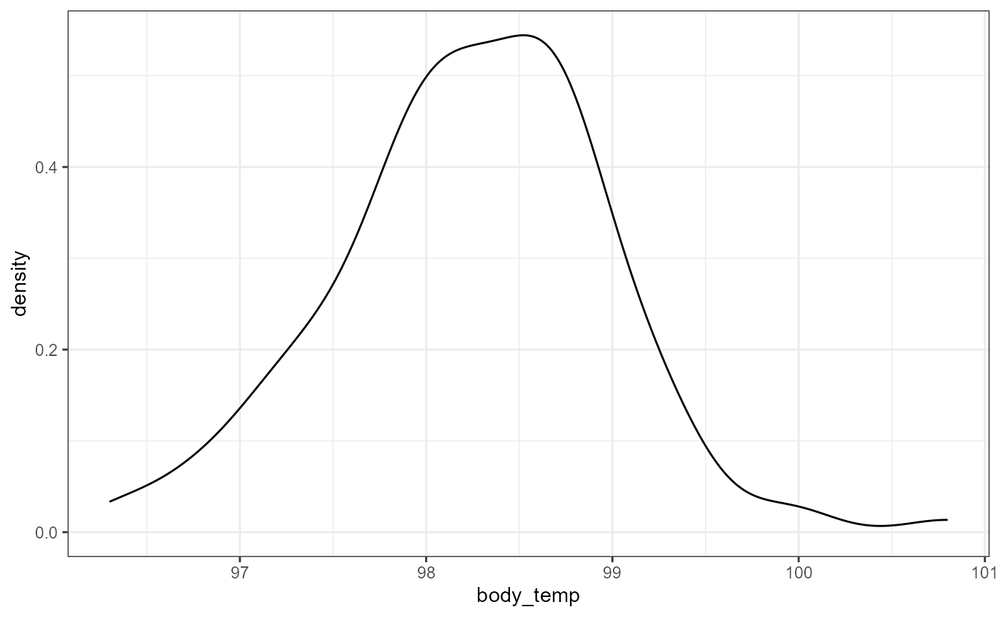
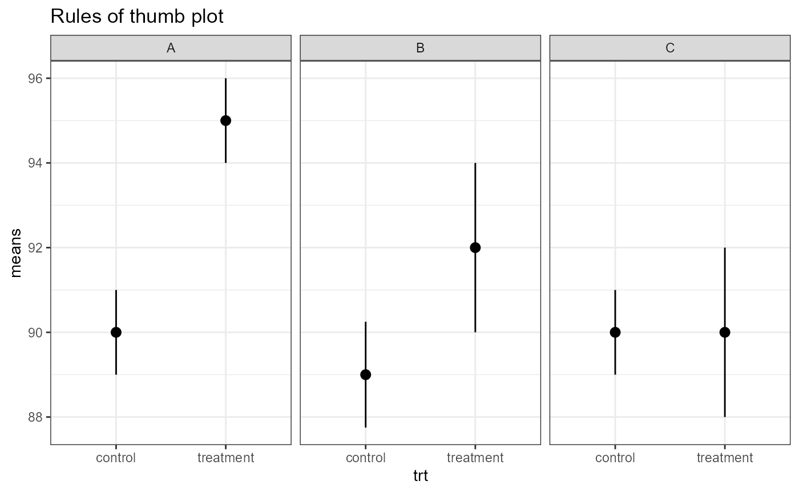
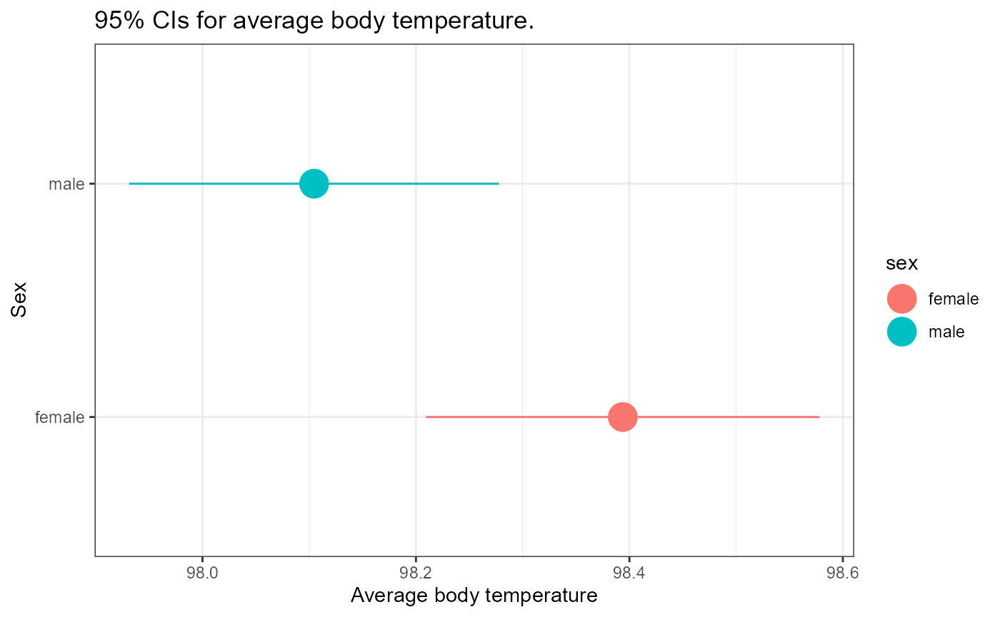
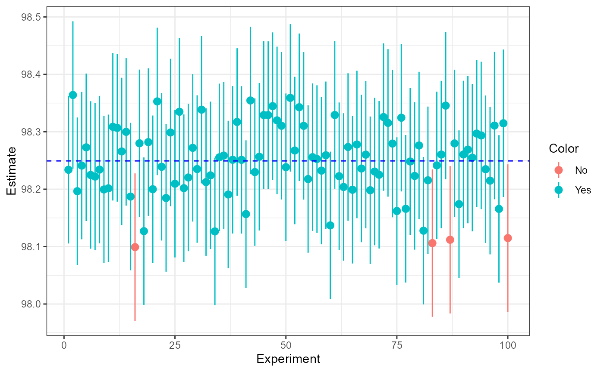

vignettes/articles/lab_05_point-estimates.Rmd
lab_05_point-estimates.RmdFor this lab, we will be using the dplyr and
ggplot2 packages. Make sure both packages are installed on
your computer, and then run the following code:
For this lab, we will be using the body_temp_hr.csv
data. You can download the csv file from D2L. Be sure to put it into
your data/ folder. When we read in the data, we will assign
it to the object called bt_samp which stands for “body
temperature sample”.
bt_samp <- read_csv("data/body_temp_hr.csv")You should always look at the data after you load it:
dim(bt_samp)## [1] 130 3
head(bt_samp)## # A tibble: 6 × 3
## body_temp sex heart_rate
## <dbl> <chr> <dbl>
## 1 96.3 male 70
## 2 96.7 male 71
## 3 96.9 male 74
## 4 97 male 80
## 5 97.1 male 73
## 6 97.1 male 75
summary(bt_samp)## body_temp sex heart_rate
## Min. : 96.30 Length:130 Min. :57.00
## 1st Qu.: 97.80 Class :character 1st Qu.:69.00
## Median : 98.30 Mode :character Median :74.00
## Mean : 98.25 Mean :73.76
## 3rd Qu.: 98.70 3rd Qu.:79.00
## Max. :100.80 Max. :89.00
names(bt_samp)## [1] "body_temp" "sex" "heart_rate"This data contains 130 observations of individual body temperatures and heart rates for patients. It also indicates the biological sex of the patient.
For this exercise, we will be focusing on the body_temp
variable.
First, let’s make a histogram and density plot of the data to see if it looks normal.
ggplot(bt_samp,
aes(x = body_temp)) +
geom_histogram(bins = 30) +
theme_bw()
ggplot(bt_samp,
aes(x = body_temp)) +
geom_density() +
theme_bw()
This data looks a little skewed. There’s a bit of a “hump” to the left side, and a couple of really large (high temperatures) in 100-101 range. However, this is probably close enough that we can use a normal approximation.
Let’s first calculate descriptive statistics (mean and standard
deviation) for the sample of body temperatures. We will store them in
new variables called bt_mean and bt_sd
respectively. We repeat the call to the objects below to have R print
out their values.
## [1] 98.24923
bt_sd## [1] 0.7331832With this information, we can write out the mean (\(\pm\) SD), rounded to one decimal place. > Our data indicates that the average temperature was 98.2 \(\pm\) 0.73 (mean \(\pm 1 SD\))
How confident are we in this average? In order to do that, we can calculate the standard error of the mean, SEM. Unfortunately, there is no built in function to calculate SE in R. But recall that the formula for SEM is:
\[\large SEM = \frac{s}{\sqrt{n}}\]
We already have \(s\) stored in the
bt_sd object. Now we just need to calculate \(\sqrt(n)\). The sqrt()
function can be used to calculate the square root, but how do we get
\(n\)?
Because there are no NA values in the
body_temp variable, we can use the length()
function to get the number of observations. You might be tempted to
enter the following to get \(n\):
length(bt_samp)## [1] 3However, the bt_samp object is a
data.frame.
class(bt_samp)## [1] "spec_tbl_df" "tbl_df" "tbl" "data.frame"And the default behavior for length() when used on a
data frame is to give the number of columns. We need to supply a
vector in order to get the number of observations. We can
accomplish this by subsetting the data frame to just the
body_temp variable using the $ syntax.
length(bt_samp$body_temp)## [1] 130Let’s calculate the SEM of body temperature and call it
bt_sem. But first, lets store the number of observations in
this data as bt_n.
## [1] 0.06430442So the mean body temperature is estimated to be 98.2 \(\pm\) 0.1 (mean \(\pm\) SEM).
We can also calculate the full interval as:
## [1] 98.185 98.314Recall that we use the c() to combine multiple values
into a single vector. Note I also used the round() function
to simplify the output.
As a bit of review, we can do the same thing using pipes, which may or may not be easier at this point than reading the functions “inside out”:
## [1] 98.185 98.314Assuming that our data is from a normal distribution, 95% Confidence intervals can approximated with the following equation:
\[\large 95\%CI =\bar{y} \pm 2*SEM\]
We can estimate the lower and upper limit of the 95% CI in R with the following:
bt_mean - 2 * bt_sem## [1] 98.12062
bt_mean + 2 * bt_sem## [1] 98.37784Therefore, the data supports, with 95% confidence, that the mean body temperature is within 98.121 and 98.38 degrees Fahrenheit.
Once again, we can use c() to have the full interval
print out as one vector:
c(bt_mean - 2 * bt_sem, bt_mean + 2 * bt_sem)## [1] 98.12062 98.37784We can change the confidence level of our estimate by modifying the “2” value above. Briefly, recall that the empirical rule states that ~95% of the observed data falls within 2 standard deviations of the sample. Here, we are not comparing observations and sample means, but instead comparing sample means with the true mean. (We will explore the distribution of sample means more below.) However, the same general pattern applies. Namely, that 95% of the sample means falls within 2 standard deviations of the true mean.
Also recall that ~99% falls within 3 standard deviations. So, we can calculate a 99% CI by changing the 2 to a 3 in the equation above:
\[\large 99\%CI =\bar{y} \pm
3*SEM\]
Likewise in R:
bt_mean - 3 * bt_sem## [1] 98.05632
bt_mean + 3 * bt_sem## [1] 98.44214So we can estimate, with 99% confidence, that the mean body temperature lies within the range of 98.056 and 98.442.
You might be familiar with the popular notion that average body temperature is around 98.6 degrees Fahrenheit. Based on the 95 and 99% confidence intervals calculated above, what can we say about this hypothesis?
Formally (more on formal hypotheses later in class):
\[H_0: \mu = 98.6^\circ ~Fahrenheit\] \[H_A: \mu \ne 98.6^\circ ~Fahrenheit\]
95% CI Interpretation: Based on the data, with 95% confidence, the interval of average body temperature does not include 98.6 degrees. Therefore, we can reject the null hypothesis (\(H_0\)) and accept the alternative that the true mean of the population does not equal 98.6 degrees.
99% CI interpretation: Complete this interpretation based on the 99% Confidence Interval on your own.
In the above, we were just interested to see if a specific value (98.6) was within our interval. We can also compare the 95% confidence interval for the means of two different groups.
Below is a plot of CIs from three different scenarios. These are basic “rules of thumb”. We will get into more formal analyses and calculate exact p-values in future classes.
A. Means are definitely different (i.e., low p-value)
B. Means are different (p-value < 0.05, but maybe not much less).
C. Means are NOT different.

dplyr
Let’s say that we are interested in comparing the mean body
temperatures between males and females in this data set. We could split
the data and perform all of the same tasks above on each data frame.
Alternatively, we could harness the power of dplyr and
calculate everything in a few short steps. For the following example, I
will only be calcualting the 95% confidence interval.
The steps will break down to the following:
1. group the data based on sex
2. Calculate summary statistics using mean() and
sd() inside of a summarise() function
3. mutate the summarized data to calculate 95 and 99%
confidence intervals.
4. select only variables of interest
5. Plot confidence intervals in ggplot()
But first, I’m going to make bt_samp a tibble to shorten
the display output in this lab.
## # A tibble: 130 × 3
## body_temp sex heart_rate
## <dbl> <chr> <dbl>
## 1 96.3 male 70
## 2 96.7 male 71
## 3 96.9 male 74
## 4 97 male 80
## 5 97.1 male 73
## 6 97.1 male 75
## 7 97.1 male 82
## 8 97.2 male 64
## 9 97.3 male 69
## 10 97.4 male 70
## # ℹ 120 more rowsNow I’m going to perform steps 1-3 one at a time in the following
code blocks.
* I’m presenting these blocks one at a time to emphasize the iterative
process when figuring out to code your problems
* in reality, I would run these and build upon each step, but my final
script would just have one call to perform the whole thing
## # A tibble: 130 × 3
## # Groups: sex [2]
## body_temp sex heart_rate
## <dbl> <chr> <dbl>
## 1 96.3 male 70
## 2 96.7 male 71
## 3 96.9 male 74
## 4 97 male 80
## 5 97.1 male 73
## 6 97.1 male 75
## 7 97.1 male 82
## 8 97.2 male 64
## 9 97.3 male 69
## 10 97.4 male 70
## # ℹ 120 more rows
# step 2 summarize the data
bt_samp %>%
as_tibble() %>%
group_by(sex) %>%
summarize(mean_bt = mean(body_temp, na.rm = TRUE),
sd_bt = sd(body_temp, na.rm = TRUE),
n_bt = n())## # A tibble: 2 × 4
## sex mean_bt sd_bt n_bt
## <chr> <dbl> <dbl> <int>
## 1 female 98.4 0.743 65
## 2 male 98.1 0.699 65
# step 3, calculate SEM and CI's
# be sure to match new variable names that you created
bt_samp %>%
as_tibble() %>%
group_by(sex) %>%
summarize(mean_bt = mean(body_temp, na.rm = TRUE),
sd_bt = sd(body_temp, na.rm = TRUE),
n_bt = n()) %>%
mutate(sem = sd_bt / sqrt(n_bt),
ci95_low = mean_bt - 2 * sem,
ci95_high = mean_bt + 2 * sem)## # A tibble: 2 × 7
## sex mean_bt sd_bt n_bt sem ci95_low ci95_high
## <chr> <dbl> <dbl> <int> <dbl> <dbl> <dbl>
## 1 female 98.4 0.743 65 0.0922 98.2 98.6
## 2 male 98.1 0.699 65 0.0867 97.9 98.3
# step 4, select CI variables and save into a new object for plotting
bt_sex <- bt_samp %>%
as_tibble() %>%
group_by(sex) %>%
summarize(mean_bt = mean(body_temp, na.rm = TRUE),
sd_bt = sd(body_temp, na.rm = TRUE),
n_bt = n()) %>%
mutate(sem = sd_bt / sqrt(n_bt),
ci95_low = mean_bt - 2 * sem,
ci95_high = mean_bt + 2 * sem) %>%
select(sex, ci95_low, mean_bt, ci95_high)
# print out the new object so we can see the values
bt_sex## # A tibble: 2 × 4
## sex ci95_low mean_bt ci95_high
## <chr> <dbl> <dbl> <dbl>
## 1 female 98.2 98.4 98.6
## 2 male 97.9 98.1 98.3Draw a number line and mark the mean and the lower and upper confidence intervals for each group. Do the confidence interval overlap? At the 95% confidence level, what can we say about the average body temperatures for males and females based on this data?
Now let’s use ggplot to display these confidence intervals.
# step 5, plot point estimates
bt_sex %>%
ggplot(aes(y = sex,
x = mean_bt,
xmin = ci95_low,
xmax = ci95_high,
color = sex)) +
geom_pointrange(size = 1.5) +
theme_bw() +
labs(x = "Average body temperature",
y = "Sex",
title = "95% CIs for average body temperature.")
How would you interpret this result? Look at the “Rules of thumb” plot above as a guideline.
You may have realized that this is close to our two different rules, CI’s only overlap a little bit, but the means are quite close together. This is a case that may be too close to call based on our rules of thumb. Here we would likely need to run a more formal hypothesis test such as Student’s t-test.
Just in case you’re wondering, here is the results of a simple t-test.
t.test(body_temp ~ sex,
var.equal = TRUE,
alternative = "two.sided",
data = bt_samp)##
## Two Sample t-test
##
## data: body_temp by sex
## t = 2.2854, df = 128, p-value = 0.02393
## alternative hypothesis: true difference in means between group female and group male is not equal to 0
## 95 percent confidence interval:
## 0.03882216 0.53963938
## sample estimates:
## mean in group female mean in group male
## 98.39385 98.10462Here, a p-value of 0.02 is less than \(\alpha = 0.05\) so this difference in temperature IS significant. Don’t worry if you don’t remember all these details right now, we will come to this in due course.
In order to explore the distribution of sample means in greater detail, let’s repeat the above experiment by sampling 130 random observations of temperature from a hypothetical population.
Let’s assume that the mean and SD for the original sample are the “true parameters” i.e., \(\mu\) = 98.2492308 and \(\sigma\) = 0.7331832. This is most certainly not the case, but it’s a good enough estimate for now.
In order to draw a new sample from this distribution, we can use the
rnorm() function. Type in ?rnorm to pull up
the help page for this function.
Note that the arguments are n, mean, and
sd. We can enter numbers for these arguments, or we can use
the objects that we’ve already saved.
Recall the values stored in each of these objects:
bt_n## [1] 130
bt_mean## [1] 98.24923
bt_sd## [1] 0.7331832In order to draw a new sample of observations, we can enter the following:
Note that the set.seed() function fixes the random
number generator for consistency. They are still “random” numbers, but
we will get the same sequence of random numbers every time, as long as
we run the set.seed(444) each time.
As an example, run the following code a few times:
rnorm(n = 5)And now try the following a few times:
Back to our new sample. We can calculate the mean, sd, SEM, and 95%CI of our new sample as follows:
## [1] 98.20756
new_sd## [1] 0.7073895
new_sem## [1] 0.06204216
# 95% CI
c(new_mean - 2*new_sem, new_mean + 2*new_sem)## [1] 98.08348 98.33164We can see there is some variation in these estimates, but that they are relatively similar.
Now, we could keep doing the above over and over again to get a distribution of samples, but that would require lots of typing, and almost certainly we would make a number of errors.
Instead, we can use the power of R to automate this for us with minimal typing. Don’t worry too much about what the code below is doing. Essentially, I’m going to use a “for loop” to repeat our sampling procedure 100 times. If you have any questions about this process or want to learn more, please ask me during open class times, or come to my office.
# set.seed so we all have the same numbers
set.seed(2562)
# define our variables
true_mean <- bt_mean
true_sd <- bt_sd
obs_n <- 130
# make a dataframe called "samp" to hold our simulation estimates
samp <- data.frame(Experiment = 1:100,
Estimate = numeric(length = 100),
SE = numeric(length = 100))
# repeat sample 100 times
for(i in 1:100){
x <- rnorm(obs_n, true_mean, true_sd)
samp$Estimate[i] = mean(x)
samp$SD[i] = sd(x)
samp$SEM = sd(x)/sqrt(obs_n)
samp$true_mean = true_mean
}We now have a new object called samp in our R
environment which has the “experiment” replicate (from 1 to 100). And
for each experiment we have a mean, sd, and SEM. Notice I also repeated
the “true_mean” value. This is for use in ggplot a few
steps below. Now, we can use the mutate() function from
dplyr to add estimates of our lower and upper confidence
interval values.
# overwrite the old "samp" to include our new variables
samp <- samp %>%
mutate(
# Estimate is the mean for our sample
LCI = Estimate - 2 * SEM, # Lower CI
UCI = Estimate + 2 * SEM, # Upper CI
Color = # make a categorical value
ifelse(LCI <=true_mean & UCI >= true_mean, "Yes", "No"))
# print out head() of new "samp" to see new variables
head(samp)## Experiment Estimate SE SD SEM true_mean LCI UCI Color
## 1 1 98.23382 0 0.7490101 0.06420672 98.24923 98.10540 98.36223 Yes
## 2 2 98.36406 0 0.6497228 0.06420672 98.24923 98.23565 98.49248 Yes
## 3 3 98.19651 0 0.6653367 0.06420672 98.24923 98.06810 98.32492 Yes
## 4 4 98.24108 0 0.7983420 0.06420672 98.24923 98.11267 98.36949 Yes
## 5 5 98.27288 0 0.8196224 0.06420672 98.24923 98.14447 98.40129 Yes
## 6 6 98.22478 0 0.7159369 0.06420672 98.24923 98.09637 98.35319 YesNow, we can use ggplot to illustrate which confidence
intervals from our repeated experiments had the “true mean” within
them.
ggplot(samp,
aes(x = Experiment,
y = Estimate,
ymin = LCI,
ymax = UCI,
color = Color)) +
geom_pointrange() +
# add reference line for "true" mean
geom_hline(
yintercept = true_mean,
linetype = "dashed",
color = "blue") +
theme_bw()
Here, we hav 96/100 samples which have the “true” mean which is close to our approximated 95% CI.